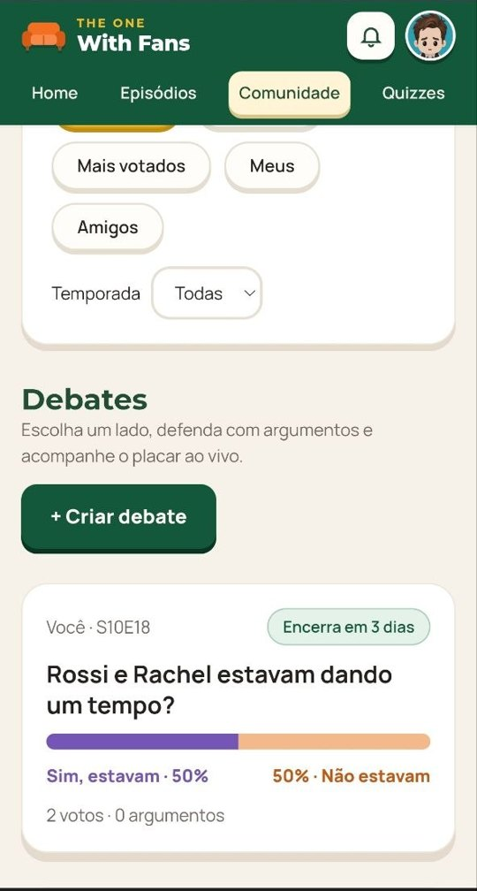
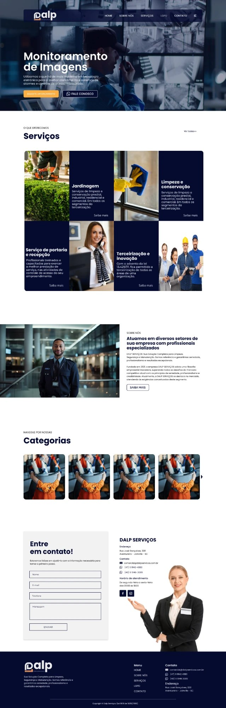
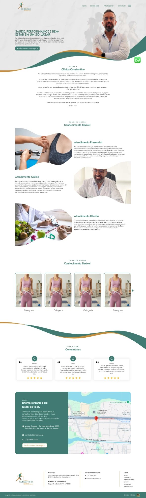
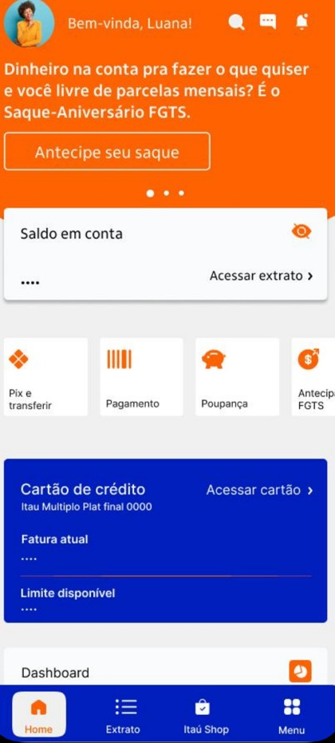
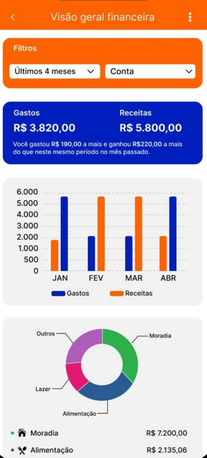

Investigo antes de propor. Estruturo antes de desenhar.
Sou Samille Leão, UX/UI Designer. Conecto necessidades dos usuários, objetivos de negócio e decisões de design em produtos digitais.
Cases selecionados
Problemas reais,
decisões justificadas
Cinco projetos, do discovery ao produto no ar. Cada um mostra o problema, o processo e por que a solução ficou como ficou.

The One With Fans
Desafio: transformar uma série que terminou há mais de duas décadas numa comunidade digital relevante, onde quem assiste pela primeira vez conversa sem levar spoiler.



Pet · afetivoServiços · corporativoClínica · orgânicoDesign em escala
Desafio: acelerar a produção de sites institucionais sem transformar marcas diferentes em versões do mesmo template. Uma biblioteca modular no Figma, adotada por toda a equipe.


5 testes · 12/12 tarefasItaú: experiência bancária digital
Desafio: reduzir a complexidade das operações bancárias e criar uma experiência intuitiva, acessível e consistente em três plataformas.
SDP: Spa dos Pés
Desafio: transformar a experiência de uma clínica de podologia em um produto digital moderno, com uma base sólida para o time de desenvolvimento.
Modu
Desafio: ajudar designers a definir direcionamentos visuais e a explorar soluções de layout.
Como eu trabalho
Do problema à
solução validada
O processo se adapta a cada projeto. Estas etapas sempre aparecem de alguma forma.
Entender
Pesquisa, benchmarking e conversa com usuários para achar o problema real.
→ insights, perfis, hipótesesOrganizar
Arquitetura da informação e fluxos que deixam claro o caminho de cada pessoa.
→ sitemap, user flowsPrototipar
Wireframes evoluem para protótipos navegáveis, com cada decisão justificada.
→ wireframes, protótiposValidar
Testes e pesquisas mostram o que funciona e o que precisa mudar.
→ ajustes, priorizaçãoEscalar
Design System, documentação e handoff para o produto crescer com consistência.
→ componentes, tokensSobre
Repertório visual a serviço de problemas reais
Sou UX/UI Designer e crio experiências digitais que conectam necessidades dos usuários, objetivos de negócio e soluções funcionais.
Atuo com arquitetura da informação, fluxos, wireframes, prototipação e design de interfaces, com atenção à usabilidade, à consistência visual e à escalabilidade.
Minha formação em Design Gráfico me deu repertório visual. A prática em UX me ensinou a usar esse repertório para resolver problemas. Hoje aprofundo UX Research, Product Discovery e Design Systems.
Experiência
UX/UI Designer
Grupo Ideal Trends 09/2024 – atualInterfaces digitais, landing pages e produtos focados em usabilidade, em colaboração com o time de desenvolvimento e com evolução contínua das experiências.
Formação
Profissão UX/UI Design
EBAC01/2026Tecnólogo em Design Gráfico
Uniasselvi07/2026Ferramentas
- Figma
- FigJam
- Miro
- Google Analytics
- Photoshop
- Illustrator
- ChatGPT
Contato
Vamos construir algo que faça sentido para quem usa?
Estou aberta a oportunidades como UX/UI Designer e Product Designer.